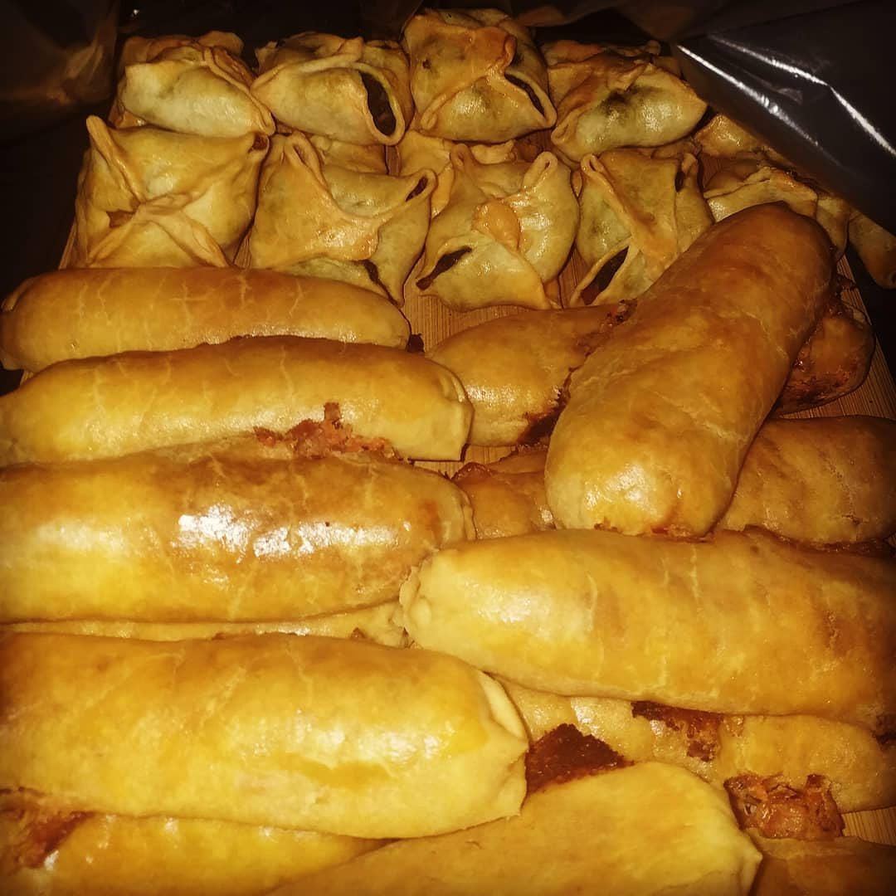

Zelenina podľa @jeannette_ladybaker — Normy Jedál
Šátečky se špenátem a uzeným masem, mini záviny se sýrovo-zeleninovou směsí
112/365-2021
.
.
#projekt365 #kazdydenjednafotka #satecky #spenat #spinach #maso #zelenina #vegetable #vegetables #gemüse #syr #cheese #käse #kase #bakingtime #bakinglover #baking #thankstohospital #food #dekujeme #meliradost #essen #withlove #kdyztomilujesnenicoresit #backen #backenzeit #ladybaker